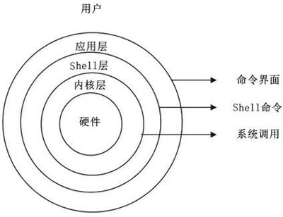
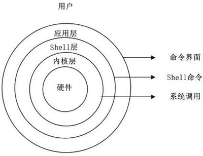

首页 > 编程笔记
Shell脚本是什么
我们平时所说的 Shell 可以理解为 Linux 系统提供给用户的使用界面。Shell 为用户提供了输入命令和参数并可得到命令执行结果的环境。当一个用户登录 Linux 之后，系统初始化程序 init 就根据 /etc/passwd 文件中的设定，为每个用户运行一个被称为 Shell（外壳）的程序。
确切地说，Shell 是一个命令行解释器，它为用户提供了一个向 Linux 内核发送请求以便运行程序的界面系统级程序，用户可以用 Shell 来启动、挂起、停止甚至编写一些程序。
Shell 处在内核与外层应用程序之间，起着协调用户与系统的一致性、在用户与系统之间进行交互的作用。图 1 是 Linux 系统层次结构图，Shell 接收用户输入的命令，并把用户的命令从类似 abed 的 ASCII 码解释为类似 0101 的机器语言，然后把命令提交到系统内核处理；当内核处理完毕之后，把处理结果再通过 Shell 返回给用户。

图 1 Linux系统层次结构图
Shell 与其他 Linux 命令一样，都是实用程序，但它们之间还是有区别的。一旦用户注册到系统后，Shell 就被系统装入内存并一直运行到用户退出系统为止；而一般命令仅当被调用时，才由系统装入内存执行。
与一般命令相比，Shell 除了是一个命令行解释器，同时还是一门功能强大的编程语言，易编写，易调试，灵活性较强。作为一种命令级语言，Shell 是解释性的，组合功能很强，与操作系统有密切的关系，可以在 Shell 脚本中直接使用系统命令。大多数 Linux 系统的启动相关文件（一般在 /etc/rc.d 目录下）都是使用 Shell 脚本编写的。
同传统的编程语言一样，Shell 提供了很多特性，这些特性可以使 Shell 脚本编程更为有用，如数据变量、参数传递、判断、流程控制、数据输入和输出、子程序及中断处理等。
说了这么多，其实我们在 Linux 中操作的命令行界面就是 Linux 的 Shell，也就是 Bash，但是我们的图形界面是 Shell 吗？其实从广义讲，图形界面当然也是 Shell，因为它同样用来接收用户的操作，并传递到内核进行处理。不过，这里的 Shell 主要指的是 Bash。
最重要的 Shell 是 Bourne Shell，这个命名是为了纪念此 Shell 的发明者 Steven Bourne。从 1979 年起，UNIX 就开始使用 Boume Shell。Bourne Shell 的主文件名为 sh，开发人员便以 sh 作为 Bourne Shell 的主要识别名称。
虽然 Linux 与 UNIX 一样，可以支持多种 Shell，但 Boume Shell 的重要地位至今仍然没有改变，许多 UNIX 系统中仍然使用 sh 作为重要的管理工具。它的工作从开机到关机，几乎无所不包。在 Linux 中，用户 Shell 主要是 Bash，但在启动脚本、编辑等很多工作中仍然使用 Bourne Shell。
C Shell 是广为流行的 Shell 变种。C Shell 主要在 BSD 版的 UNIX 系统中使用，发明者是柏克莱大学的 Bill Joy。C Shell 因为其语法和 C 语言类似而得名，这也使得 UNIX 的系统工程师在学习 C Shell 时感到相当方便。
Bourne Shell 和 C Shell 形成了 Shell 的两大主流派别，后来的变种大都吸取这两种 Shell 的特点，如 Korn、 tcsh 及 Bash。
Bash Shell 是 GNU 计划的重要工具之一，也是 GNU 系统中标准的 Shell。Bash 与 sh 兼容，所以许多早期开发出来的 Bourne Shell 程序都可以继续在 Bash 中运行。现在使用的 Linux 就使用 Bash 作为用户的基本 Shell。
Bash 于 1988 年发布，并在 1995-1996年推出Bash 2.0。在这之前，广为使用的版本是1.14，Bash 2.0增加了许多新的功能，以及具备更好的兼容性。表 2 中详细列出了各版本的具体情况。
注意，Shell 的两种主要语法类型有 Bourne 和 C，这两种语法彼此不兼容。Boume 家族主要包括 sh、ksh、Bash、psh、zsh；C 家族主要包括 csh、tcsh（Bash 和 zsh 在不同程序上支持 csh 的语法）。
本章讲述的脚本编程就是在 Bash 环境中进行的。不过，在 Linux 中除了可以支持 Bash，还可以支持很多其他的 Shell。我们可以通过 /etc/shells 文件来査询 Linux 支持的 Shell。命令如下：
确切地说，Shell 是一个命令行解释器，它为用户提供了一个向 Linux 内核发送请求以便运行程序的界面系统级程序，用户可以用 Shell 来启动、挂起、停止甚至编写一些程序。
Shell 处在内核与外层应用程序之间，起着协调用户与系统的一致性、在用户与系统之间进行交互的作用。图 1 是 Linux 系统层次结构图，Shell 接收用户输入的命令，并把用户的命令从类似 abed 的 ASCII 码解释为类似 0101 的机器语言，然后把命令提交到系统内核处理；当内核处理完毕之后，把处理结果再通过 Shell 返回给用户。

图 1 Linux系统层次结构图
Shell 与其他 Linux 命令一样，都是实用程序，但它们之间还是有区别的。一旦用户注册到系统后，Shell 就被系统装入内存并一直运行到用户退出系统为止；而一般命令仅当被调用时，才由系统装入内存执行。
与一般命令相比，Shell 除了是一个命令行解释器，同时还是一门功能强大的编程语言，易编写，易调试，灵活性较强。作为一种命令级语言，Shell 是解释性的，组合功能很强，与操作系统有密切的关系，可以在 Shell 脚本中直接使用系统命令。大多数 Linux 系统的启动相关文件（一般在 /etc/rc.d 目录下）都是使用 Shell 脚本编写的。
同传统的编程语言一样，Shell 提供了很多特性，这些特性可以使 Shell 脚本编程更为有用，如数据变量、参数传递、判断、流程控制、数据输入和输出、子程序及中断处理等。
说了这么多，其实我们在 Linux 中操作的命令行界面就是 Linux 的 Shell，也就是 Bash，但是我们的图形界面是 Shell 吗？其实从广义讲，图形界面当然也是 Shell，因为它同样用来接收用户的操作，并传递到内核进行处理。不过，这里的 Shell 主要指的是 Bash。
Shell的分类
目前 Shell 的版本有很多种，如 Bourne Shell、C Shell、Bash、ksh、tcsh 等，它们各有特点，下面简要介绍一下。最重要的 Shell 是 Bourne Shell，这个命名是为了纪念此 Shell 的发明者 Steven Bourne。从 1979 年起，UNIX 就开始使用 Boume Shell。Bourne Shell 的主文件名为 sh，开发人员便以 sh 作为 Bourne Shell 的主要识别名称。
虽然 Linux 与 UNIX 一样，可以支持多种 Shell，但 Boume Shell 的重要地位至今仍然没有改变，许多 UNIX 系统中仍然使用 sh 作为重要的管理工具。它的工作从开机到关机，几乎无所不包。在 Linux 中，用户 Shell 主要是 Bash，但在启动脚本、编辑等很多工作中仍然使用 Bourne Shell。
C Shell 是广为流行的 Shell 变种。C Shell 主要在 BSD 版的 UNIX 系统中使用，发明者是柏克莱大学的 Bill Joy。C Shell 因为其语法和 C 语言类似而得名，这也使得 UNIX 的系统工程师在学习 C Shell 时感到相当方便。
Bourne Shell 和 C Shell 形成了 Shell 的两大主流派别，后来的变种大都吸取这两种 Shell 的特点，如 Korn、 tcsh 及 Bash。
Bash Shell 是 GNU 计划的重要工具之一，也是 GNU 系统中标准的 Shell。Bash 与 sh 兼容，所以许多早期开发出来的 Bourne Shell 程序都可以继续在 Bash 中运行。现在使用的 Linux 就使用 Bash 作为用户的基本 Shell。
Bash 于 1988 年发布，并在 1995-1996年推出Bash 2.0。在这之前，广为使用的版本是1.14，Bash 2.0增加了许多新的功能，以及具备更好的兼容性。表 2 中详细列出了各版本的具体情况。
| Shell类别 | 易学性 | 可移植性 | 编辑性 | 快捷性 |
|---|---|---|---|---|
| Boume Shell (sh) | 容易 | 好 | 较差 | 较差 |
| Korn Shell (ksh) | 较难 | 较好 | 好 | 较好 |
| Boume Again (Bash) | 难 | 较好 | 好 | 好 |
| POSIX Shell (psh) | 较难 | 好 | 好 | 较好 |
| C Shell (csh) | 较难 | 差 | 较好 | 较好 |
| TC Shell (tcsh) | 难 | 差 | 好 | 好 |
| Z Shell (zsh) | 难 | 差 | 好 | 好 |
注意，Shell 的两种主要语法类型有 Bourne 和 C，这两种语法彼此不兼容。Boume 家族主要包括 sh、ksh、Bash、psh、zsh；C 家族主要包括 csh、tcsh（Bash 和 zsh 在不同程序上支持 csh 的语法）。
本章讲述的脚本编程就是在 Bash 环境中进行的。不过，在 Linux 中除了可以支持 Bash，还可以支持很多其他的 Shell。我们可以通过 /etc/shells 文件来査询 Linux 支持的 Shell。命令如下：
[root@localhost ~]# vi /etc/shells
/bin/sh
/bin/bash
/sbin/nologin
/bin/tcsh
/bin/csh
[root@localhost ~]# sh
#切换到sh
sh-4.1#
#sh的提示符界面
sh-4.1# exit
exit
#退回到Bash中
[root@localhost ~]# csh
#切换到csh
[root@localhost ~]#
#csh的提示符界面，和Bash一致
[root@localhost ~]# vi /etc/passwd
root:x:0:0:root:/root:/bin/bash
bin:x: 1:1 :bin:/bin:/sbin/nologin
daemon:x:2:2:daemon:/sbin:/sbin/nologin
…省略部分输出…
关注公众号「站长严长生」，在手机上阅读所有教程，随时随地都能学习。内含一款搜索神器，免费下载全网书籍和视频。

微信扫码关注公众号